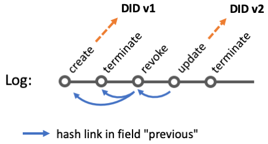

This specification is not a W3C Standard nor is it on the W3C Standards Track. Learn more about W3C Community and Business Groups. GitHub Issues are preferred for discussion of this specification.
History
-
Version 0.3: 19 October 2021 (initial public release, link)
-
Version 0.4: 7 January 2022 (current version)
1. Introduction
Decentralized Identifiers (DIDs) [DID-CORE] are a new type of identifier for verifiable, decentralized digital identity. These new identifiers are designed to enable the controller of a DID to prove control over it and to be implemented independently of any centralized registry, identity provider, or certificate authority. These sorts of identifiers often utilize a heavy-weight registry, such as ones utilizing Decentralized Ledger Technologies (DLT), to create, read, update, and deactivate DIDs.
While DLT-based DID Methods have great decentralization characteristics, and some of the more centralized DID Methods provide strong system control guarantees, the general approaches tend to be expensive to set up and operate. OYDID takes the approach to not maintain DID and DID Document on a public ledger but on one or more local storages (that might be publicly available). Through cryptographically linking the DID Identifier to the DID Document, and furthermore linking the DID Document to a chained provenance trail the same security and validation properties as a traditional DID can be maintained while avoiding highly redundant storage and also works in settings without general public access.
The rest of this document outlines the syntax for the did:oyd method, the operations it supports, and some security and privacy considerations as well as ehtical aspects that implementers might want to be aware of when using this DID method.
2. The did:oyd Format
The format for the did:oyd method conforms to the DID core specification [DID-CORE] as outlined by W3C. It consists of the did:oyd prefix, followed by a Multibase [MULTIBASE] (default: base58-btc) encoded value that is a Multihash [MULTIHASH] (default: sha2-256) value of composed of information from the payload, keys, and log.
The detailed calculation of the DID identifier from the internal document and log information via ABNF is described here:
; !synta x("abnf" ) did- oyd- f ormat ="did:oyd:" ident if ier ident if ier = MULTIBASE ( base- ident if ier did- inf ormat ion - hash ) did- inf ormat ion - hash = MULTIHASH ( hash- ident if ier did- inf ormat ion ) did- inf ormat ion ="{doc:" payload",key:" key- value",log:" log- value"}" payload = <json - grammar- rules> key- value = public- doc- key-e n coded":" public- revocat ion - key-e n coded log- value =ter minat ion - hash-e n coded public- doc- key-e n coded = MULTIBASE ( base- ident if ier public- doc- key ) public- doc- key = <public keyfr om Ed25519 key pair usedf or verif yin g payload> public- revocat ion - key-e n coded = MULTIBASE ( base- ident if ier public- revocat ion - key ) public- revocat ion - key = <public keyfr om Ed25519 key pair usedf or verif yin g revocat ions >ter minat ion - hash-e n coded = MULTIBASE ( base- ident if ierter minat ion - log-e ntr y- hash )ter minat ion - log-e ntr y- hash = MULTIHASH ( hash- ident if ierter minat ion - log-e ntr y )ter minat ion - log-e ntr y ="{op:" DIGIT",ts:" DIGIT",doc:" revoke-e n coded",sig:" sig- revoke-e n coded",previous: []}" revoke-e n coded = MULTIBASE ( base- ident if ier revoke- hash ) revoke- hash = MULTIHASH ( hash- ident if ier sub- revocat ion - log-e ntr y ) sub- revocat ion - log-e ntr y ="{op:" DIGIT", ts:" DIGIT", doc:" sub- doc-e n coded", sig:" sig- sub- doc-e n coded"}" sig- revoke-e n coded = MULTIBASE ( base- ident if ier sig- revoke ) sig- revoke = <signe d revoke-e n coded wit h private keyfr om Ed25519 key- pair usedf or verif yin g revocat ion > sub- doc-e n coded = MULTIBASE ( base- ident if ier sub- doc- hash ) sub- doc- hash = MULTIHASH ( hash- ident if ier sub- doc ) sub- doc ="{doc:" payload",key:" key- value"}" sig- sub- doc-e n coded = MULTIBASE ( base- ident if ier sig- sub- doc ) sig- sub- doc = <sign sub- doc-e n coded wit h private keyfr om Ed25519 key- pair usedf or payload> base- ident if ier = DEFAULT base58 bt c hash- ident if ier = DEFAULT sha2-256
3. DID Operations
The following section outlines the DID operations for the did:oyd method.
3.1. Create (Register)
Creating a did:oyd identifier requires a payload (e.g., service endpoints) as JSON document and two ED25519 cryptographic key pairs in the format described in Section § 2 The did:oyd Format (public-doc-key-encoded, public-revocation-key-encoded).
The DID document and associated log entries are stored in a registry accessible by relevant stakeholders. An example is given below (EXAMPLE 1) listing a payload, internal and W3C conform DID document, log entries, private keys, and private revocation document.
DID: did:oyd:zQmZ8DEGQtJcpoQDMKYJkTiQn9dQLM2QzvmDQXuj8vCfvdj
Payload:
{
"foo": "bar"
}
Internal DID document:
{
"doc": {
"foo": "bar"
},
"key": "z2MC8dVTmUN5sR4pf5H8CiEPJiqqsdyTSp8Jd8YZ8MBR3:zBD5cx11PaXDLG7vUmhKBzDeZnXFPAaNTqpWFZsAQom2M",
"log": "zQmcE3b3ENZ5aDCyCcqe2wsbUytUexBubaUuAfTTfTJ7dhA"
}
W3C conform DID document:
{
"@context": "https://www.w3.org/ns/did/v1",
"id": "did:oyd:zQmaV8M4Pazau8WWwsVeyMQWmmckHXr1L2UPtyEjqfy6wXe",
"verificationMethod": [{
"id": "did:oyd:zQmaV8M4Pazau8WWwsVeyMQWmmckHXr1L2UPtyEjqfy6wXe",
"type": "Ed25519VerificationKey2018",
"controller": "did:oyd:zQmaV8M4Pazau8WWwsVeyMQWmmckHXr1L2UPtyEjqfy6wXe",
"publicKeyBase58": "z2MC8dVTmUN5sR4pf5H8CiEPJiqqsdyTSp8Jd8YZ8MBR3"
}],
"keyAgreement": [{
"id": "did:oyd:zQmaV8M4Pazau8WWwsVeyMQWmmckHXr1L2UPtyEjqfy6wXe",
"type": "X25519KeyAgreementKey2019",
"controller": "did:oyd:zQmaV8M4Pazau8WWwsVeyMQWmmckHXr1L2UPtyEjqfy6wXe",
"publicKeyBase58": "zBD5cx11PaXDLG7vUmhKBzDeZnXFPAaNTqpWFZsAQom2M"
}],
"service": [{
"foo": "bar"
}]
}
Log entries:
[{
"ts": 1633298265,
"op": 2,
"doc": "zQmaV8M4Pazau8WWwsVeyMQWmmckHXr1L2UPtyEjqfy6wXe",
"sig": "z2useWt4sdvyhS9ShFdVVUaF4can1dZP3me2ZZYCoSCppendHnhRH8t9MprMCeG7Z8m8Yc77WhqBXLpzQ9gbA5SQU",
"previous": []
}, {
"ts": 1633298265,
"op": 0,
"doc": "zQmSNQmMSZixRoDWAorp8FsSmonGn6R2EKhNbEZCZqQEL7J",
"sig": "z4vr45B8M91xRaMuWXgX796JA2p1WfQ2i6URMtULwKtz4cgjSVDxDUgVdKBM9Ftn6RoAsgE6C2EDp2YaRUVQgNWVB",
"previous": []
}]
Private payload key: z8H1vqLXBt566s7Zt8Zpr4qYLvh4dngS4bb9vuwX4X3n7
Private revocation key: z4oACjiKVzDTdHuocH3DDqhdSBqsVpQb1HBZo7rAJduz4
Private revocation document:
{
"ts": 1633298265,
"op": 1,
"doc": "zQmaE6SWSzdW8dhub7K4fff5NHUy9bieEwarPZDq7BubaJr",
"sig": "z4o77Eq665Bjp5KfHc4x7PTvwnyF9LhgUB7n4u5Skqi7Wv1CaGdXknvUQjdimzNTtpXpf4uDCciDfe2vn6SyBR4Vk"
}
3.2. Read (Resolve)
Reading a did:oyd is a matter of searching for a DID document that either can be directly linked (through hashing and encoding) to the provided identifier or through traversing through the log to unambiguously link the provided identifier to the latest version of the DID document. Cryptographic proof for the link between DID Identifier and DID Document, ownership, and completeness is performed in the following steps (here the example for a newly created DID without any updates so far):
-
the identifier is the encoded hash value of the internal DID document (the hashing algorithm is encoded in the identifier using MULTIHASH, default:
SHA2-256, the encoding algorithm is also encoded in the identifier using MULTIBASE, default:base58-btc) -
the DID document includes public keys (encoded with MULTIBASE, default:
base58-btc) and the hash value of a DID log entry -
the log entry (create, op=2) for the DID document provides a signature ("sig") of the identifier ("doc") to prove possession of the private key, i.e., use the public ED25519 payload key in the DID document to verify this signature)
-
the other log entry (terminate, op=0) provides revocation info; in case a log entry with the stated hash in doc exists the DID resolving process must continue
An example is given below (EXAMPLE 2) depicting the log entries to be evaluated for linking an old DID identifier (DID v1) to the content of DID v2.
EXAMPLE 2: Visualization and process of linked log entries to resolve a DID identifier

Figure 2: Visualization of log entries in EXAMPLE 2
Process:
-
User wants to resolves DID v1 and queries OYDID registry with identifier
-
OYDID registry responds with (outdated) DID document for DID v1 and log entries create and terminate (shown on the very left in the picture above)
-
Resolver (automatically) queries the OYDID registry for a revocation log entry with the hash stored in the terminate entry
-
OYDID repository returns revoke entry
-
Resolver (automatically) queries the OYDID registry for log entries that hold the hash value of the revoke entry
-
OYDID repository must retrieve exactly one update entry (and associated terminate entry) plus associated DID document (DID v2) as linked by the update entry
-
Resolver validates linked hash entries and queries again OYDID registry for a revocation lo entry from the second terminate entry (shown on the very right in the picture above)
-
OYDID repository finds no information of such a revocation entry and therefore the resolver can return DID v2 as the latest document
Note: it is in the interest of the owner to publish revocation entries and make those easily accessible to ensure that even outdated DID identifier resolve to the latest DID document
3.3. Update
Updating did:oyd is providing a new DID document (and/or new keys for key rotation) while also publishing the revocation document and original keys to prove ownership. An example is given below (EXAMPLE 3) of all log entries for an updated DID.
EXAMPLE 3: An example DID with all associated information and representations
[{
"ts": 1633300869,
"op": 2,
"doc": "zQmdxfGRfFEnLoJ9RTiyzG9TPBhK7q6zsqrGFVzuxVPv4dq",
"sig": "ziY1pSb9irVMykHotX1UDsNXP8V6iF4REVqfk2trQP9rtooAKcMkXHgjz8VTC3FEDTjKk6D2Z3ywLer1i9NKaLo4",
"previous": []
}, {
"ts": 1633300869,
"op": 0,
"doc": "zQmVnLPgFYYNf4GEzzD3gLbSR4xhpdk7dU4BWQR4pJr7R4Z",
"sig": "z2gJqK2bGP5VfZdCVijBeuUtzxiNaZm4NNMH6zm4EVG2LD4rqZg62c5craaQwEPEjxSbgjH4kE79DPwddghiNjirk",
"previous": []
}, {
"ts": 1633300869,
"op": 1,
"doc": "zQmVYqZoGSncYGybUnZi514niKgju68B6AVp7KJAdVifsYU",
"sig": "z461mfYfCvLvkeeN9vdd1yNoqFBpKAwFHD1xLRQUb4evBwEXCJLZXT9qcfQo54VTrr3eow3mJHZ3aGa7inuP29ZXg",
"previous": ["zQmVDzKVeyj4k8RYWHtKdML6MXUZX8Lu4LiiS46SfhQkZfG",
"zQmSjHywvbeHV1JzsLwexzXS9246vzHkyBUkwSbXDH5f1gg"]
}, {
"ts": 1633300910,
"op": 3,
"doc": "zQmNUV1MJ5xKkFm6Lc9EKqAauGzbKP7amvbyxsx79mKwqPB",
"sig": "z2UMg3AhegwzuMgrJ1bTRDyu9W9Kp8G7ERZi2Kin3JG8UhwJqf1yivNEYY5JvB9aPDfH8GEEw9Mbvscqhk1LJH8cp",
"previous": ["zQmetSQY5UZd91ubdWyQTh2gqVuKwkUVtjamh33p7spaYVR"]
}, {
"ts": 1633300910,
"op": 0,
"doc": "zQmQTdAmqxuQQB2yBj4qZoS4ooNUnL7PzwUydEepDqjJHd4",
"sig": "z5Bh8VwnUUQzFruVJosySBDfJJy5CRADbpYHjNH2qFjcCx71J6QJxttVhfnh7ZgfZpir9ghsNk24g3vRrDkvhR3jZ",
"previous": []
}]
3.4. Deactivate
Deactivating an OYDID is simply done by publishing the private revocation entry without providing any update record. The figure below depicts the log representing a deactivated DID.

Figure 3: Visualization of log entries for a deactivated DID